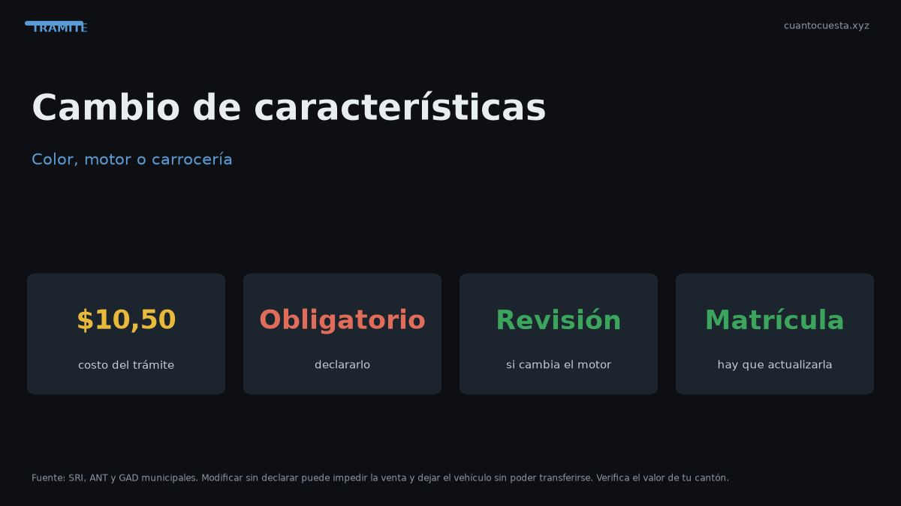

Cambio de características del vehículo en Ecuador: color, motor y carrocería
Cambiar el color, el motor o la carrocería de tu auto exige declararlo en la ANT: cuándo es obligatorio, cuánto cuesta ($10,50) y qué pasa si no lo haces.

Si cambiaste el color, el motor o modificaste la carrocería de tu vehículo, tienes que declararlo en la ANT. El servicio cuesta alrededor de $10,50 y sirve para que el registro refleje el estado real del auto. Si no lo haces, el vehículo queda con datos que no coinciden con la realidad — y eso te bloquea traspasos, revisiones y matrícula.
El cambio de características no es un trámite decorativo: es lo que mantiene coherente el vínculo entre tu placa y las piezas que el registro declara. Cuando ese vínculo se rompe, el sistema te frena.
Cuándo se necesita hacer el cambio de características
Casos típicos que requieren declaración:
- Cambio de color (pintura total, o parcial cuando altera el color registrado).
- Cambio de motor (reemplazo por falla o por mejora).
- Cambio de carrocería (transformaciones, adaptaciones, cambios de tipo).
- Cambio de uso del vehículo (por ejemplo, de particular a comercial).
- Modificaciones estructurales relevantes.
No todo cambio obliga al trámite: accesorios, rines, radio, vidrios polarizados o detalles estéticos no alteran las características registradas. Lo que importa es lo que el registro guarda: color, número de motor, número de chasis, tipo de carrocería y uso.
| Cambio | ¿Requiere trámite? |
|---|---|
| Pintura total a otro color | Sí |
| Pintura parcial que cambia el color registrado | Sí |
| Reemplazo de motor | Sí |
| Cambio de tipo de carrocería | Sí |
| Cambio de particular a comercial | Sí |
| Rines, radio, accesorios | No |
| Mantenimiento y repuestos originales | No |
Por qué es obligatorio declararlo
El registro vehicular vincula una placa con un vehículo específico: color, motor, chasis. Cuando esos datos cambian sin declararse, el registro dice algo que ya no es cierto. Las consecuencias son concretas:
- La revisión técnica puede observar o rechazar la discrepancia.
- El traspaso de dominio se traba: no se transfiere un vehículo cuyos datos no coinciden.
- En un siniestro, la aseguradora puede complicar el reclamo si el vehículo no coincide con el registro.
- Puede generar sanciones y obligarte a regularizar después, con más tiempo y papeleo.
Un motor cambiado y no declarado es una de las causas más frecuentes de traspaso fallido en Ecuador. El comprador llega, paga y descubre que el número de motor del registro no coincide con el del auto. Hasta que se declare y regularice el cambio, la transferencia no avanza y el vendedor ya tiene su dinero.
Costo del trámite
| Concepto | Costo referencial |
|---|---|
| Servicio de cambio de características | $10,50 |
| Nueva especie de matrícula (si aplica) | $25,00 |
| Certificado Único Vehicular (CUV) | $7,50 |
| Certificados adicionales | Varía por entidad |
Los valores son referenciales. Si el trámite exige inspección del vehículo, revisión de improntas o certificados extra, el costo total sube. Confirma en tu oficina antes de pagar.
Requisitos habituales
- Cédula del propietario.
- Matrícula vigente o Certificado Único Vehicular.
- Documento que respalde el cambio: factura del motor nuevo, comprobante del taller de repintura, factura del trabajo de carrocería.
- Formulario de solicitud del trámite.
- Certificado de improntas cuando cambió el motor o el chasis.
- Vehículo disponible para inspección cuando la entidad lo requiera.
- Estar sin multas pendientes ni matrícula atrasada.
El respaldo documental es el corazón del trámite: sin factura o comprobante del cambio, la solicitud se devuelve.
Paso a paso
- Reúne el documento que respalde el cambio (factura del motor, del taller, del trabajo de pintura).
- Verifica que no tengas multas ni matrícula atrasada.
- Presenta la solicitud en la ANT o en el GAD habilitado.
- Paga el servicio ($10,50 referencial).
- Cuando corresponda, presenta el vehículo para la verificación de datos e improntas.
- Recibe el registro actualizado y pide la nueva especie de matrícula si la emisión cambió.
Impacto en la matrícula
El cambio de características puede alterar tu matrícula futura:
- Si cambia el uso (particular a comercial), cambian las tasas y el tratamiento del vehículo.
- Si cambia el avalúo por un motor distinto, el IPVM y el rodaje se recalculan sobre el nuevo avalúo.
- Si cambia la especie de matrícula (por ejemplo, de particular a pública), el trámite anual puede variar.
Por eso declarar no es solo evitar multas: mantiene la matrícula coherente con el auto que realmente tienes.
Qué pasa si modificas sin declarar
- La revisión técnica puede observar o rechazar el vehículo.
- El traspaso de dominio se bloquea.
- Pueden aplicarse sanciones.
- Te obliga a regularizar tarde, con más trámites y más costo.
- En caso de siniestro, tu posición frente a la aseguradora se debilita.
Cuánto demora
El cambio de características es un trámite de pocos días hábiles cuando el vehículo requiere inspección, y puede resolverse el mismo día cuando solo se actualiza documentación respaldada.
| Escenario | Tiempo referencial |
|---|---|
| Solo actualización documental | Mismo día a 2 días hábiles |
| Requiere inspección del vehículo | 2 a 5 días hábiles |
| Emisión de nueva especie de matrícula | Suma 1 a 3 días hábiles |
Los tiempos varían por oficina y por carga de trabajo. Ciudades con más demanda pueden tomar más días.
Resumen práctico
- Declara color, motor, carrocería y uso en la ANT; el servicio cuesta ~$10,50.
- No todo cambio requiere trámite: accesorios y detalles estéticos no cuentan.
- Sin declaración: traspaso bloqueado, revisión observada y posibles sanciones.
- Reúne facturas y comprobantes: el trámite vive de ellos.
- Un motor no declarado es la causa más común de traspaso fallido.
- El trámite demora de un día a pocos días hábiles según si requiere inspección.
Los valores y requisitos son referenciales y pueden cambiar por resolución. Confirma en tu oficina de la ANT o GAD el monto vigente y la lista exacta de documentos antes de iniciar.
Sigue leyendo
Calendario de matriculación en Ecuador: qué mes te toca según tu placa
La matrícula se paga según el último dígito de tu placa. Revisa qué mes te corresponde, la mult
Certificado Único Vehicular (CUV) en Ecuador: qué es y cómo obtenerlo
El Certificado Único Vehicular (CUV) cuesta $7,50 en Ecuador. Qué información contiene, cuándo
Cómo hacer el traspaso de dominio de un vehículo en Ecuador (paso a paso)
Traspaso de dominio en Ecuador paso a paso: los 4 pasos ante notaría y ANT, el impuesto del 1%
Duplicado de matrícula y placas en Ecuador: qué hacer si las pierdes
Perdiste o te robaron las placas: pasos, denuncia, requisitos, costos ($23 placas, $25 especie,
Impuesto del 1% por compraventa de vehículos usados en Ecuador
El impuesto por compraventa de vehículos usados en Ecuador es el 1% sobre el mayor valor entre
Cómo usamos estos datos
Las cifras de esta guía provienen de fuentes públicas oficiales y tarifarios de concesionarios publicados. Los valores son referenciales: tasas municipales, promociones y precios de repuestos varían. Verifica siempre en la entidad o concesionario antes de decidir.